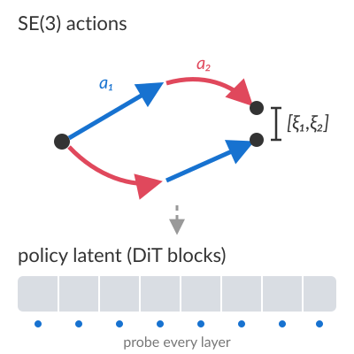
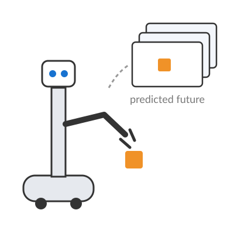
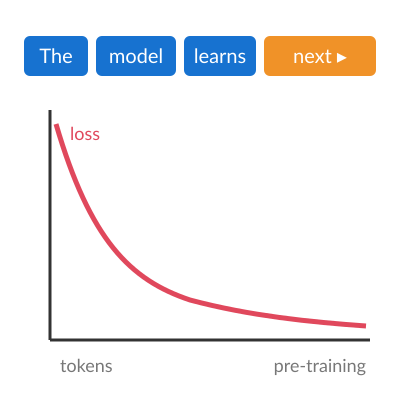

|
Ethan Walker
I'm an independent researcher interested in how intelligence generalizes, and in building robots capable of autonomous loco-manipulation.
My recent work looks inside large robot policies and video world models to understand what they learn about actions and the physical world.
Email /
CV /
Scholar /
Twitter /
Github
|
|
Research
I'm interested in the generalization of intelligence and in autonomous loco-manipulation.
In particular, I study whether embodied models internalize the geometric laws that link actions to their perceptual consequences.
|
|

|
Probing SE(3) Structure in the Latent Space of a Robot Diffusion Policy
Ethan Walker
In preparation, 2026
Motivated by sensorimotor contingency theory, we ask whether a large action-conditioned diffusion policy (Cosmos Policy) represents the group structure of rigid-body motion.
We execute counterfactual end-effector actions, and pairs of actions in both orders, in simulated kitchen scenes, and test the equivariance and commutativity of the resulting latent changes across the layers of the network.
|
|

|
Mobile Manipulation Competition with Toyota HSR
Took part in a competition on manipulation performance with the Toyota Human Support Robot (HSR).
I analyzed video-based world models, V-JEPA 2 and Cosmos-Predict, to understand how well their representations and predictions support manipulation on the robot.
|
|

|
LLM Development Competition
Took part in a team competition to build a large language model with the best benchmark performance.
I was responsible for pre-training.
|
|
2024/09 – 2026/09
|
EQUES Inc.
Developed services built on AI agents.
|
|
2024/09 – 2025/06
|
Matsuo Institute
Researched neural network architectures that learn efficiently.
|
This homepage is designed based on Jon Barron's website and deployed on Github Pages.
|
|